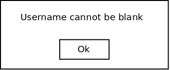
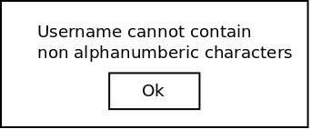
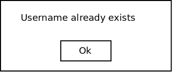
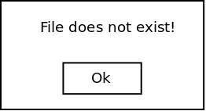
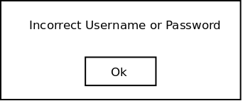
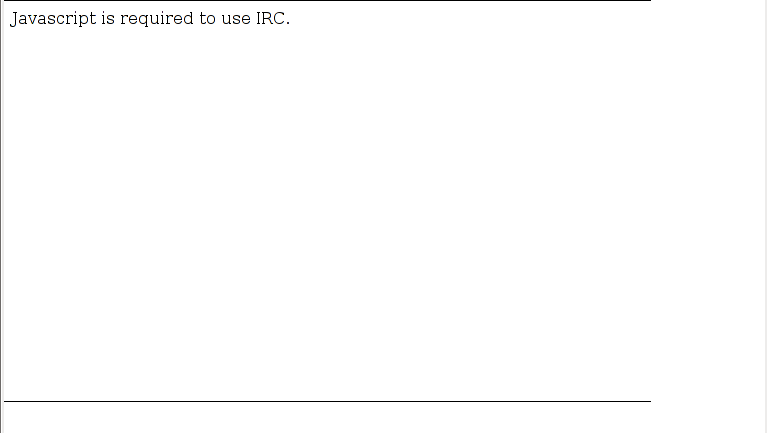

This section covers error messages that are displayed by the CSTutor when using it.
The CSTutor will display error messages when and instructor attempts to add empty, malformed, or existing usernames to the class roster. Details of adding a user can be found in Section 2.3.4.1.
Figure 2.7.1-1 shows the error message that the CSTutor displays when an instructor attempts to add a blank username to the class roster.

Figure 2.7.1-1: Add User Null Error Dialog.
Figure 2.7.1-2 shows the error message that the CSTutor displays when an instructor attempts to add a username that contains non alphanumberic characters to the class roster.

Figure 2.7.1-2: Add User Alphanumeric Error Dialog.
Figure 2.7.1-3 shows the error message that the CSTutor displays when an instructor attempts to add a username that already exists in the class roster.

Figure 2.7.1-3: Add User Exists Error Dialog.
The CSTutor will display an error message when an instructor attempts to import a class roster from a file that does not exist. Details of importing a class roster can be found in Section 2.3.4.5.
Figure 2.7.2-1 shows the error message that the CSTutor displays when an instructor attempts to import a class roster from a file that does not exist.

Figure 2.7.2-1: Import File Does Not Exist Dialog.
After the user attempts to log in with an incorrect username and password CSTutor presents the user with an error message and prevents login. More information on logging in.

Figure 2.7.3-1: Incorrect Username or Password.
This section lists all errors generated while Registering New Users.
Below are all the error messages generated during New User Registration. The error window is generic so the guide only shows one example.
Figure 2.7.4-1: Only Alphanumeric characters allowed in Username.
If the user tries to register a name with non alphanumeric characters CSTutor presents an error
window with the text "Username cannot contain non alphanumeric characters".
If the user tries to register a name with over 25 characters CSTutor presents an error
window with the text "Usernames cannot be longer than 25 characters".
If the user's password and confirm password fields do not match CSTutor presents an error
window with the text "Password fields do not match".
If the user tries to register a username that is already taken CSTutor presents an error
window with the text "Username already taken".
This section lists all errors generated while using the communication tools.
The communication tools interface requires javascript to function properly. In a browser that does not execute javascript, the user will instead see this error.
 Figure 2.7.5-1: Communication tools IRC without javascript